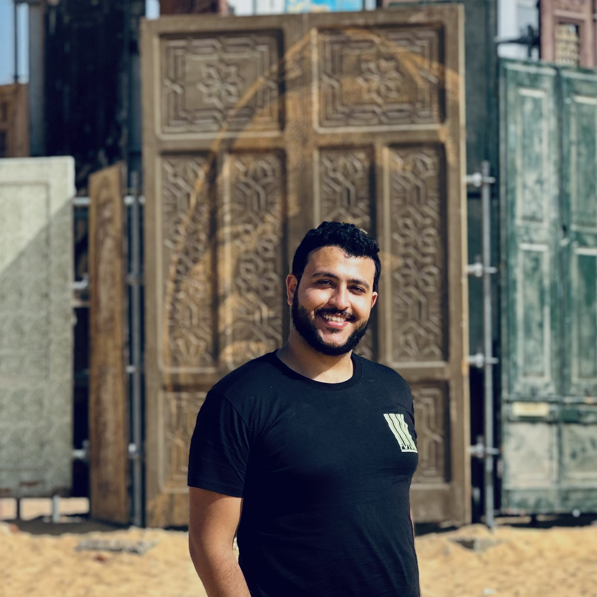

Oracle & Data
Oracle APEX, SQL, PL/SQL, Oracle 19c multi-tenant environments, Oracle 23ai, forms, reports, and enterprise modules.
APEXPL/SQL19c23ai
Based in Alexandria, Egypt
Software Engineer and Oracle APEX Developer focused on database-driven applications, production web systems, automation, and embedded software.

01 / About
I turn requirements into maintainable software—from the database and backend to the interface users rely on.
My work spans Oracle APEX and PL/SQL, Laravel production systems, PowerShell automation, and C/C++ applications for embedded environments. That range helps me understand not just a feature, but the system around it.
I hold a B.Sc. in Computer Engineering from Pharos University in Alexandria and continue to deepen my practice through hands-on projects and professional Oracle certifications.
Oracle APEX, SQL, PL/SQL, Oracle 19c multi-tenant environments, Oracle 23ai, forms, reports, and enterprise modules.
Production-oriented web applications with Laravel, PHP, JavaScript, REST APIs, responsive interfaces, and structured MVC patterns.
Workflow automation with PowerShell and software for Raspberry Pi, Linux, sensors, and microcontroller-based systems.
02 / Experience
Designed and developed a company website from initial requirements through production, implementing Laravel/PHP backend features using structured MVC patterns.
Designed database-driven business modules and supporting infrastructure for complex operational workflows.
Created structured learning programs and materials for students beginning C and Python.
03 / Selected projects
An ERP course project focused on translating operational requirements into a structured web experience.
A growing collection of practical work completed through an embedded Linux diploma.
A messaging application clone exploring modern UI components and application behavior.
A Discord-inspired application exploring community messaging and symmetric encryption concepts.
A cross-platform application project built with Dart and Flutter.
A C program that validates puzzle rows, columns, and boxes using separate threads.
04 / Credentials
Certified · October 2025
Certified · October 2025
Education
Pharos University in Alexandria
2018 — 2023Selected recognition
05 / Contact
I’m open to software engineering, Oracle APEX, backend, and automation opportunities.
mostu.yakout@gmail.com ↗